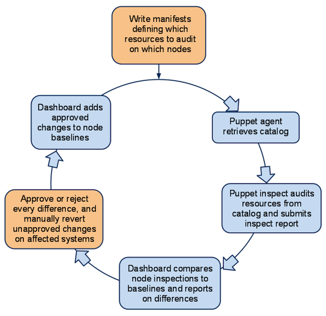

Puppet Dashboard Baseline Compliance Workflow
This documentation does not refer to a released product.
For documentation of the compliance features released in Puppet Enterprise 1.2, please see the Puppet Enterprise manual.
This chapter describes the baseline plugin’s expected workflow and explains some key terms and concepts.
Navigation
- Introduction and Workflow
- Bootstrapping
- Interface
- Internals
The Compliance Workflow Cycle
The baseline compliance workflow is designed to audit changes to systems managed by ad-hoc manual administration. This differs from and isn’t fully compatible with Puppet’s standard managed resources workflow — although you can use both models of management at the same site (or even in the same catalog), they should be used on disjunct sets of resources.

A sysadmin writes manifests defining which resources to audit on which nodes. Puppet agent retrieves and caches a catalog compiled from those manifests. Puppet inspect reads that catalog to discover which resources to audit, then submits an inspect report to the puppet master, which forwards it to Puppet Dashboard. Dashboard then calculates a daily report of differences between the inspected system state and the approved baseline state, creating a baseline if one didn’t already exist. A sysadmin uses the Dashboard interface to approve or reject every difference, then manually reverts any unapproved changes as necessary. Dashboard then modifies the baseline to include any approved changes, and awaits the next day’s inspect reports.
This summary elides some details regarding daily comparisons and baseline revision; see the “Internals” chapter for more details.
Concepts
Auditing
When using this workflow, Puppet audits the state of resources, rather than enforcing a desired state; it does not make changes to any audited resources. Instead, changes are to be made manually and reviewed for approval after the fact.
After reviewing changes in the Dashboard interface, any approved changes will be considered the baseline state in future reports. Rejected changes will continue to be reported as non-baseline states until they are reverted manually on the affected machines.
Resources and Attributes
Any native Puppet resource type can be used in the baseline compliance workflow. As with similar compliance products, you can audit the content and metadata of files, but you can also audit user accounts, services, cron jobs, and anything for which a custom native type can be written.
Resources are audited by attribute — you can choose one or more attributes you wish to audit, or audit all attributes of that resource.
Manifests
The set of resources to audit is declared in standard Puppet manifests on the master and retrieved as a catalog by the agent. Instead of declaring the desired state of a resource, these manifests should declare only titles (and name/namevar, if necessary) and the audit metaparameter.
Inspect Reports
Each node being audited for compliance will routinely report the states of its audited resources. The documents it sends are called inspect reports, and differ from standard Puppet reports.
Baselines
Conceptually, a baseline is a blessed inspect report for a single node: it lists the approved states for every audited resource on that node. Each node is associated with one and only one baseline, and nodes cannot share baselines. However, nodes with similar baselines can be grouped for convenience.
Baselines are maintained by the baseline compliance plugin. They change over time as administrators approve changes to audited resources.
Groups
Although nodes cannot share baselines, nodes in a Dashboard group can have similar changes approved or rejected en masse.
The groups used by the baseline plugin are the same groups Dashboard uses for classifying nodes.
Navigation
- Introduction and Workflow
- Bootstrapping
- Interface
- Internals